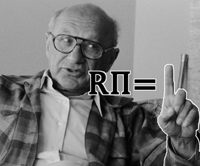

Consider a cash credit goods economy in which households have preferences of the form \(\sum_{t=0}^\infty \beta^t (\log c_{1t}+\phi \log c_{2t})\), where \(c_{1t}\) and \(c_{2t}\) denote consumption of cash and credit goods, respectively, \(\phi\) is a parameter, and \(0 < \beta < 1 \) is the discount factor. Households supply labor inelastically. The resource constraint is given by \[c_{1t} + c_{2t} + k_{t+1} = k_t^\alpha + (1-\delta) k_t\] where \(k_t\) denotes the capital stock, and the capital share parameter \(\alpha\) and the depreciation rate \(\delta\) are both positive and less than 1. It is convenient to let \(q_t\) denote the price of money (or the inverse of the price level). The representative household's budget constraint is given by \[q_t M_{t+1} + c_{1t} + c_{2t} + k_{t+1} \leq q_t M_t + R_{kt}k_t + w_t l_t + q_t T_t\] where \(M_t\) denotes cash balances, \(R_{kt}\) denotes the return to capital, and \(T_t\) denotes lump sum transfers of cash by the government. The household can use a fraction \(\theta\) of its capital stock to purchase cash goods. The cash in advance constraint is \[c_{1t} \leq q_t M_t + \theta k_t\]
A few quick notes: I will assume that labor is supplied inelastically at \(\overline{l}=1\). And I will assume that the production function is cobb-douglass; this matches the given resource constraint. I will write \(r_t\) for the price of renting a unit of capital. Then the return on capital described above is: \(R_t=1+r_t-\delta \).
Given parameters \((\beta, \phi, \alpha, \delta, \theta)\), and initial quantities \((\bar{k_0},\bar{M_0} )\), a competitive equilibrium in this economy consists of the following sets:
Assumming an interior solution with nonbinding NNCs, letting \(\lambda_t\) be the Lagrange Multipliers for the Budget constraints, and letting \(\gamma_t\) be the Lagrange Multipliers for the Cash In Advance constraints, the FOCs are: \begin{align} {\color{name}c_{1t}:} && {\beta^t \over c_{1t}} &= \lambda_t + \gamma_t\\ {\color{name}c_{2t}:} && {\phi\beta^t \over c_{2t}} &= \lambda_t \\ {\color{name}k_{t+1}:} && \lambda_t &= \lambda_{t+1}(1+r_{t+1}-\delta) + \theta\gamma_{t+1} \\ {\color{name}M_{t+1}:} && \lambda_t q_t &= \lambda_{t+1}q_{t+1} + \gamma_{t+1}q_{t+1} \\ {\color{name}k^f_{t}:} && r_t &= \alpha {(k_t^f)}^{\alpha-1}{(l_t^f)}^{1-\alpha}=\alpha {k_t}^{\alpha-1}\\ {\color{name}l^f_{t}:} && w_t &= (1-\alpha) {(k_t^f)}^{\alpha}{(l_t^f)}^{-\alpha}=(1-\alpha) {k_t}^{\alpha}\\ \end{align} Combining the first order conditions for capital, we get: \[ \lambda_t = \lambda_{t+1}(1+\alpha {k_{t+1}}^{\alpha-1}-\delta) + \theta\gamma_{t+1} \] These equations, along with the market clearing, CIA, and budget constraints, characterize the equilibrium.
There are two new assumptions in play now:
Rewriting the FOCs, CIA, and Resource Constraint with the above two assumptions: \begin{align} {\color{name}c_{1}:} && {\beta^t \over c_{1}} &= \lambda_t + \gamma_t\\ {\color{name}c_{2}:} && {\phi\beta^t \over c_{2}} &= \lambda_t \\ {\color{name}k:} && \lambda_t &= \lambda_{t+1}(1+\alpha {k}^{\alpha-1}-\delta) + \theta\gamma_{t+1} \\ {\color{name}M_{t+1}:} && \lambda_t q_t &= \lambda_{t+1}q_{t+1} + \gamma_{t+1}q_{t+1} \\ \\ {\color{name}CIA:} && c_{1} & \leq q_t M_t + \theta k \\ {\color{name}RC:} &&c_{1} + c_{2} &= k^\alpha - \delta k \\ \end{align}
Note that the CIA constraint can be rewritten as \(q_t M_0 \geq {c_1 - \theta k \over \Pi^t M_0}\).
If \(c_1 < \theta k\), then the right-hand side of the above is negative, and so the CIA constraint is nonbinding. Suppose otherwise. \(M_t \geq 0\) by the non-negativity constraint, so it must therefore be that \(q_t < 0\). But \(q_t\) cannot possibly be less than 0, because then the household would demand infinite amounts of money in period \(t+1\), using it to fund infinite amounts of consumption, and so a well-defined solution to the household's optimization problem couldn't exist. Thus, to avoid contradiction, it must be that \(c_1 < \theta k \implies \gamma_t = 0\)In this case, \(c_{1} = q_t M_t + \theta k\), which implies \[q_t = {1 \over M_t}(c_1 -\theta k) \] \[\color{red} {q_{t} \over q_{t+1}} = {M_{t+1} \over M_{t}} = \Pi \] So the price of money is decreasing at the same rate as the stock of money is increasing, which means the value of the money stock is in a steady state. \(q_t M_t = q_0 M_0\).
The FOC for money can be rewritten as \(\lambda_t {q_{t} \over q_{t+1}} = {\lambda_{t+1}+\gamma_{t+1}} \). Combine with the above to get: \[\color{Rhodamine} \Pi \lambda_t = \lambda_{t+1}+\gamma_{t+1} \] Or similarly, \(\color{Rhodamine}\Pi \lambda_t -\lambda_{t+1} = \gamma_{t+1}\).
Also note that from the FOC for the credit good, \[\color{NavyBlue}{\lambda_t \over \lambda_{t+1}} = {\phi \beta^t \over c_2 } { c_2 \over \phi \beta^{t+1}} = {1 \over \beta} \]
From the FOC for capital, \begin{align} (1+\alpha {k}^{\alpha-1}-\delta) &= {\lambda_{t} \over \lambda_{t+1}} - \theta{{\color{Rhodamine} \gamma_{t+1}} \over \lambda_{t+1}} \\ &= {\lambda_{t} \over \lambda_{t+1}} - \theta{{\color{Rhodamine}\Pi \lambda_t -\lambda_{t+1} \over \lambda_{t+1}}} \\ &= (1-\theta \Pi){\color{NavyBlue} {\lambda_{t} \over \lambda_{t+1}}} +\theta \\ &= (1-\theta \Pi){\color{NavyBlue} {1 \over \beta }} +\theta \\ \end{align} \[\boxed{\implies k = \left({1 \over \alpha}\left[ { {1-\theta \Pi \over \beta }} +\theta -1 + \delta \right]\right)^{1 \over \alpha - 1}}\]
Use the above to relate the FOCs for consumption: \[{\beta^{t+1} \over c_{1}} = {\color{Rhodamine} \lambda_{t+1} + \gamma_{t+1} = \Pi \lambda_t} = \Pi {\phi\beta^t \over c_{2}} \] \[c_2 = {\Pi \phi \over \beta} c_1\] And plug this into the Resource Constraint: \[c_1 + c_2 = {\beta +\Pi \phi \over \beta }c_1 = k^\alpha - k \] \[\boxed{ \begin{align} c_1 &= (k^\alpha - k){\beta \over \beta +\Pi \phi} \\ c_2 &= (k^\alpha - k){\Pi \phi \over \beta +\Pi \phi} \end{align} }\]
And at this point, we can express the equilibrium in terms of exogenous parameters using the above boxed equations, along with: \[\boxed{ \begin{align} k_t^f &= k & \\ l_t^f &= 1 \\ M_t^g &= M_t = \Pi^t M_0 \\ T_t &= (\Pi-1)\Pi^t M_0 \\ w_t &= w \equiv (1-\alpha) k^\alpha \\ r_t &= r \equiv \alpha k^{\alpha-1} \\ q_t &= {c_1 - \theta k \over M_t} = {c_1 - \theta k \over \Pi^t M_0} \end{align} }\]
Then \({\beta^t \over c_1} = \lambda_t = {\beta^t \phi\over c_2} \), and so \({c_2 = \phi c_1}\). Also, as in case 1, \({\lambda_t \over \lambda_{t+1}}={1\over\beta}\).
The FOC for capital implies that \(1+\alpha k^{\alpha-1}-\delta = {\lambda_t \over \lambda_{t+1}} = {1\over\beta}\). Then: \[\boxed{\begin{align} k &= \left({1\over\alpha}\left[ {1\over\beta}-1+\delta \right]\right)^{1\over \alpha - 1} \\ c_1 &= {1\over 1+\phi}(k^\alpha - k) \\ c_2 &= {\phi\over 1+\phi}(k^\alpha - k) \end{align}}\]
As for the price of money, \(q_{t+1} = {\lambda_t \over \lambda_{t+1}}q_t = {1\over\beta}q_t\). Setting \(q_t = 0 \;\forall t\) satisfies this condition. And the other characterizing equations are the same as in Case 1.
So if there is a steady state equilibrium with a constantly growing money supply, and if the CIA doesn't bind, then there is such an equilibrium that is nonmonetary.
Observe that in the monetary steady state equilibrium above: \begin{align} \theta k > c_1 &\iff \theta k > (k^\alpha - k){\beta \over \beta +\Pi \phi} \\ & \iff \beta +\Pi \phi > \beta {k^\alpha - k \over \theta k} \\ & \iff \Pi > {\beta \over \phi \theta}(k^{\alpha-1}-1) - {\beta \over \phi} \end{align} And \(k^{\alpha-1} = {1 \over \alpha}\left[ { {1-\theta \Pi \over \beta }} +\theta -1 + \delta \right]\), so \begin{align} \theta k > c_1 &\iff \Pi > {\beta \over \phi \theta}({1 \over \alpha}\left[ { {1-\theta \Pi \over \beta }} +\theta -1 + \delta \right]-1) - {\beta \over \phi} \\ &\iff \Pi + {\Pi \over \alpha\theta} > {\beta \over \phi \theta}({1 \over \alpha}\left[ { {1 \over \beta }} +\theta -1 + \delta \right]-1) - {\beta \over \phi} \\ &\iff \Pi > {\alpha\theta \over \alpha\theta +1}\left[{\beta \over \phi \theta}({1 \over \alpha}\left[ { {1 \over \beta }} +\theta -1 + \delta \right]-1) - {\beta \over \phi}\right] \equiv \bar{\Pi} \\ \end{align} Therefore if \(\pi > \bar{\Pi} - 1 \), then \(c_1 - \theta k < 0\).
Recall from above that if \(c_1 - \theta k < 0\), then the CIA is nonbinding, and so it cannot be that \(c_1 - \theta k < 0\) in a Case 1 equilibrium. Thus if \(\pi>\bar{\Pi} - 1\), the optimum must be attained in a Case 2 equilibrium, in which case there is a nonmonetary steady state in which the price of money is zero.
In a monetary steady state, the level of capital is given by: \[k = \left({1 \over \alpha}\left[ { {1-\theta \Pi \over \beta }} +\theta -1 + \delta \right]\right)^{1 \over \alpha - 1}\] This is a decreasing function of \(\Pi\). And capital output ratio is \[{k \over k^\alpha} = k^{1-\alpha}= \left({1 \over \alpha}\left[ { {1-\theta \Pi \over \beta }} +\theta -1 + \delta \right]\right)^{-1}\] This is a decreasing function of \Pi, as that term will now be a negative in the denominator.

The social optimization problem for this economy is:
\[\max_{} \sum_{t=0}^\infty \beta^t (\log c_{1t}+\phi \log c_{2t})\] such that: \[\bar{k_0}=k_0\] and for all \(t\geq 0:\) \begin{align} c_{1t}\geq 0,\; c_{2t}&\geq 0,\; k_{t+1}\geq 0,\; &\;\; \condition{Non-Negativity}\\ c_{1t} + c_{2t} + k_{t+1} &= k_t^\alpha + (1-\delta) k_t &\;\; \condition{RC}\\ \end{align}
The First order conditions for the above problem imply that \( c_{2t}=\phi c_{1t}\). Compare this to the Euler condition from the steady-state monetary competitive equilibrium above, where \(c_{2t}={\phi \Pi\over \beta}c_{1t}\). For the competitive equilibrium to attain a social optimum, it must be then that \(\Pi = \beta\).
And also from the competive equilibrium, \begin{align} R_t &= 1-\delta + r_t\\ &= 1-\delta + \alpha k^{\alpha-1} \\ &= (1-\theta \Pi){ {1 \over \beta }} +\theta\\ & = (1-\theta \beta){ {1 \over \beta }} +\theta \\ & = {1 - \theta \beta + \theta\beta \over \beta} = {1\over \beta} \end{align}
So in this economy, the optimal policy will set \(R\Pi={\beta\over\beta}=1\), and the Friedman Rule holds.